Frames
A break from the words. The everyday: light, texture, and small moments, framed through a phone camera and gathered into a handful of series.
01
After nightfall
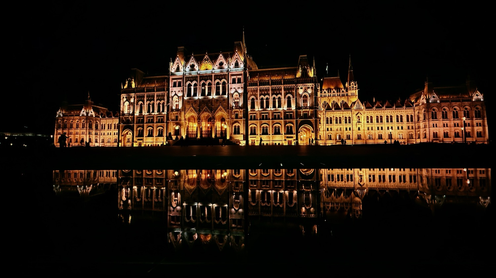
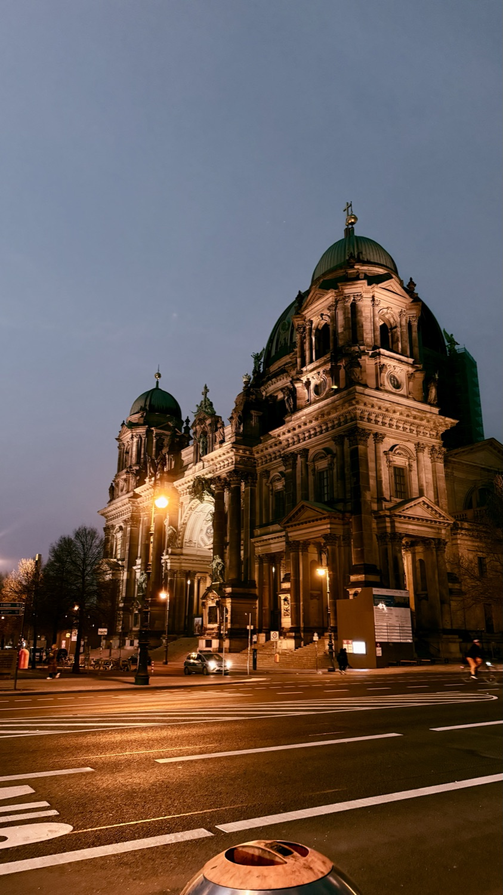
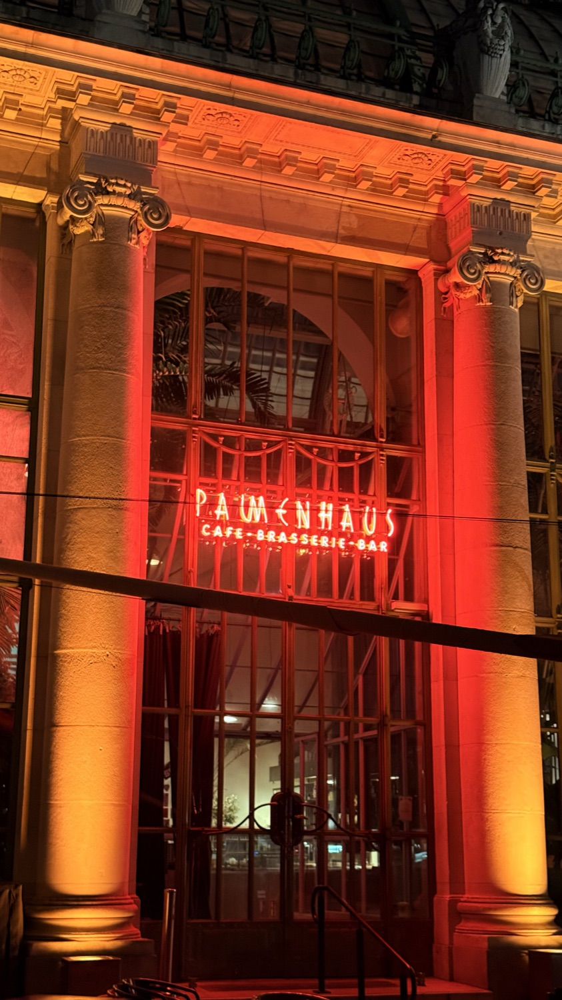
02
Held by the page
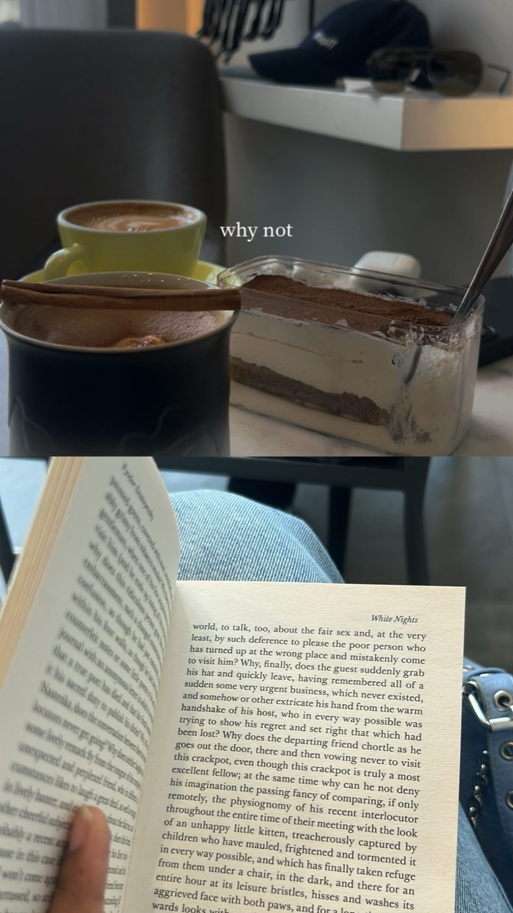
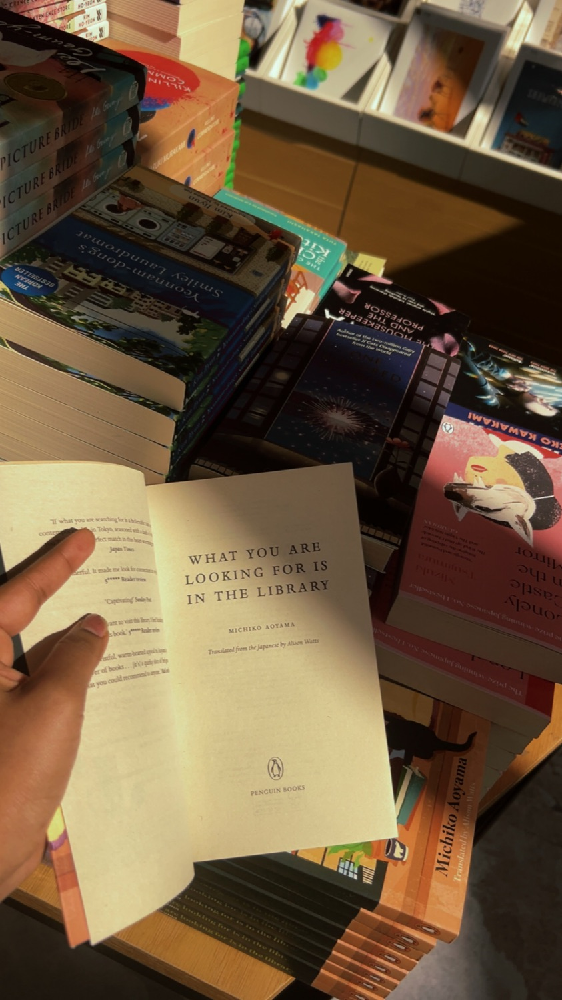
03
Notes on landscape
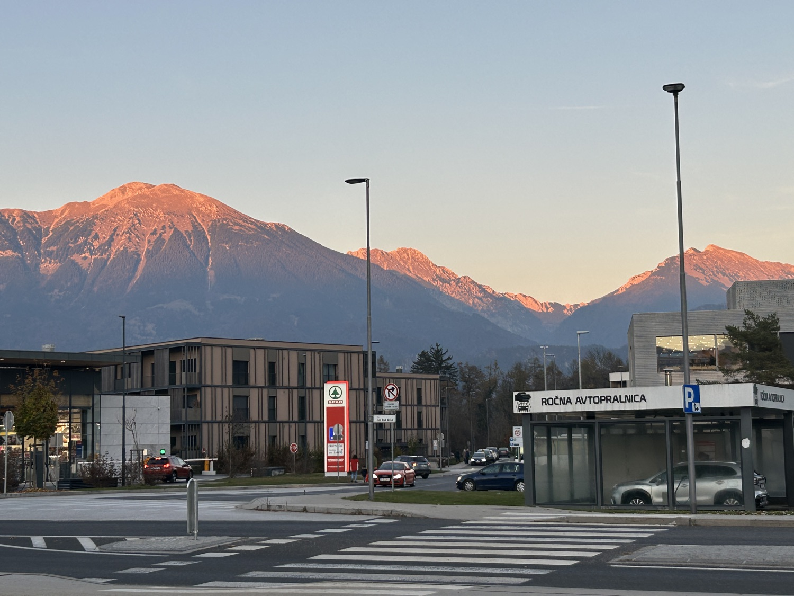
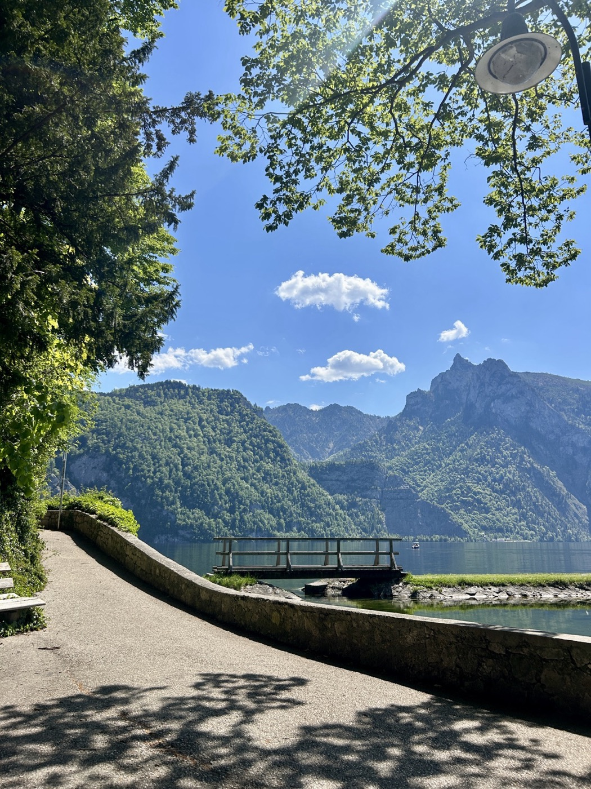
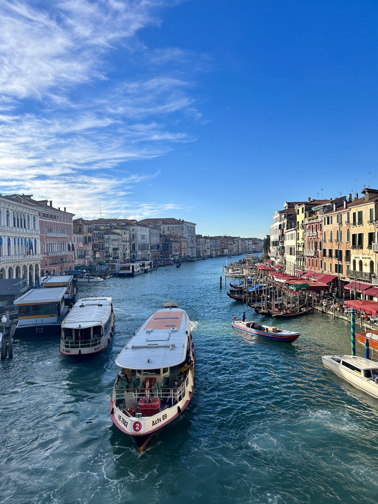
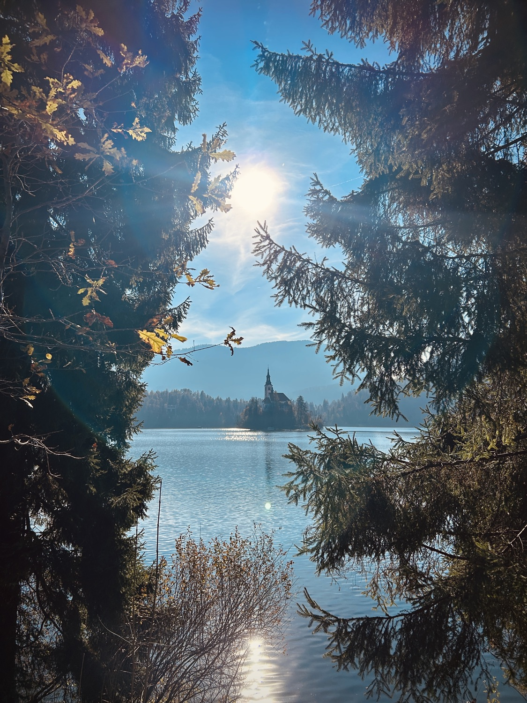
04
Silence in two tones
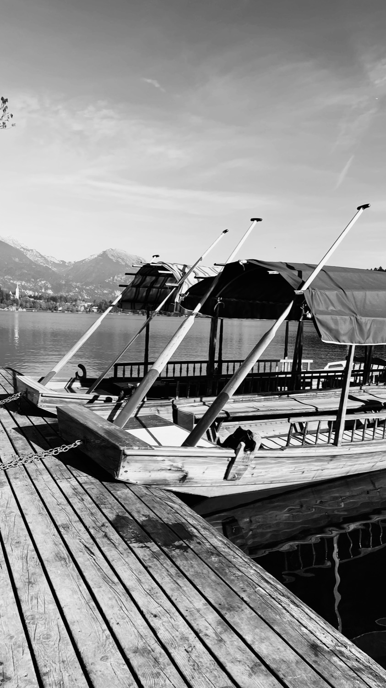
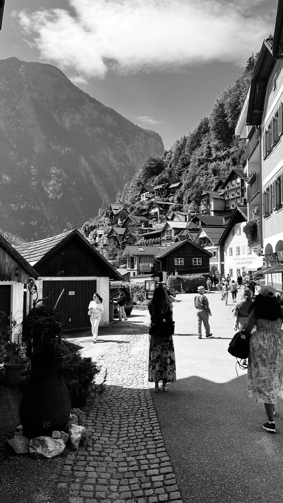
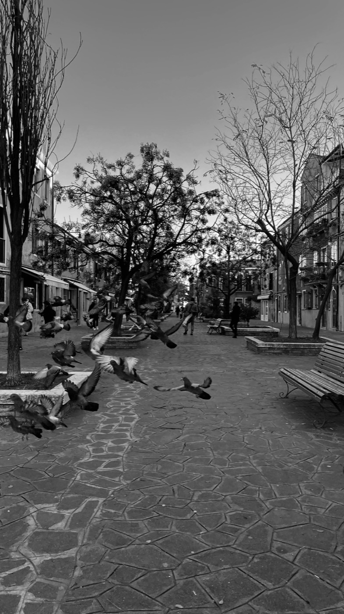
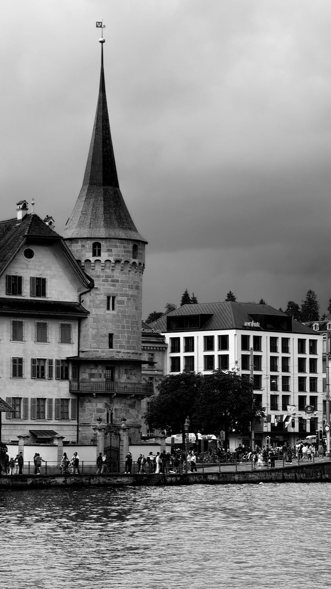
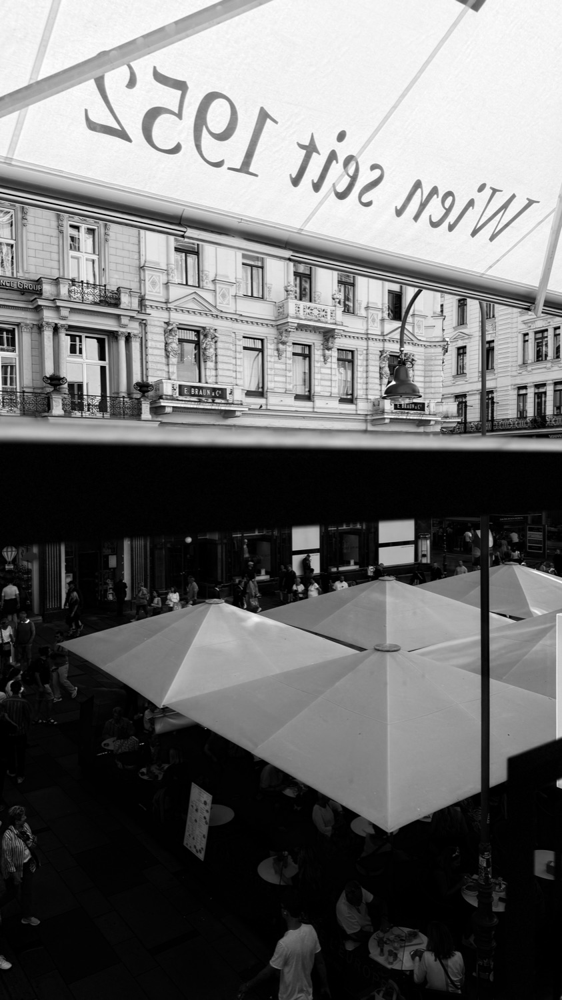
05
The city beneath the sky
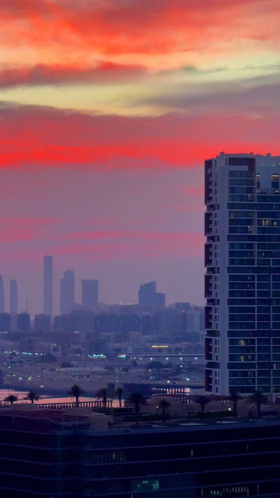
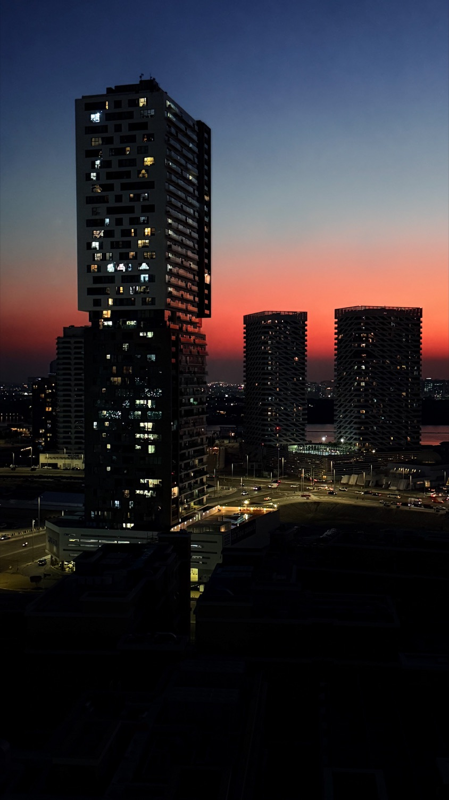
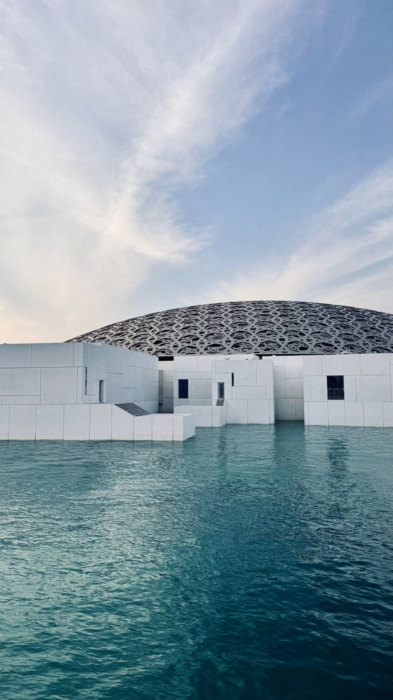